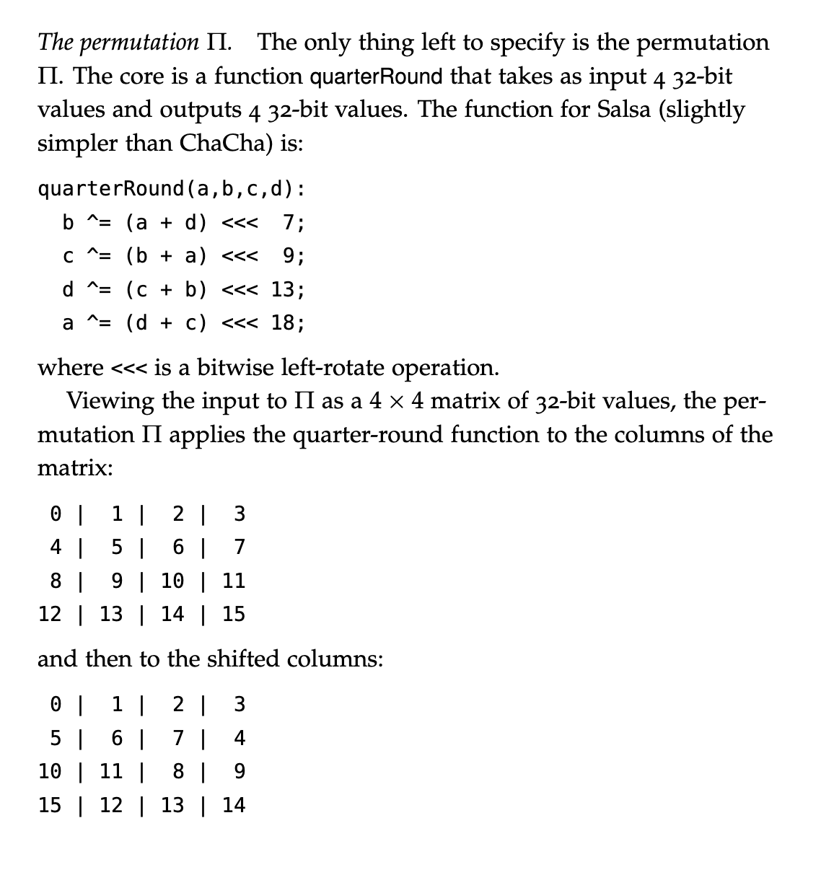
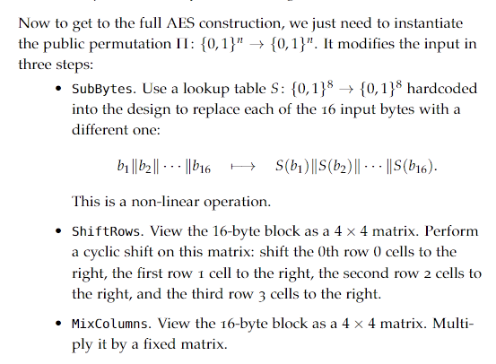

A symmetric encryption scheme is associated with a key space {Kλ}λ∈N, a message space {Mλ}λ∈N, and a ciphertext space {Cλ}λ∈N with two algorithms Enc and Dec with: Encλ:Kλ×Mλ→Cλ Decλ:Kλ×Cλ→Mλ
We define the correctness of the encryption scheme if:
Decλ(k,Encλ(k,m))=m
If our encoders and decoders are probabilistic, then this becomes:
Pr[Decλ(k,Encλ(k,m))=m]=1
Defining Security
Take 1
An encryption scheme is secure if for every λ and pair of messages m0,m1, we have: Enc(k,m0)≡Enc(k,m1) for a random k
This notation means that the probability distributions, random across the different choices of k, are equal for the two messages
A one-time pad that just takes Enc(k,m)=k⊕m, satisfies this
However, if the adversary sees more than one message, they can just xor them and get what the xor of the two messages is
If they see any plaintext, they can get the key directly out!
Here, ciphertexts are functions of the secrete key and can leak information about it
We want to be secure even if the adversary sees many ciphertexts
Take 2
An encryption scheme is secure if for every λ,ℓ∈N and every message m1,…,mℓ,m1′,…,mℓ we have: (Enc(k,m1),…,Enc(k,mℓ))≡(Enc(k,m1′),…,Enc(k,mℓ′)) for a random k
This is sufficiently strong, but is impossible to achieve!
This cannot be possible if the encryption algorithm is deterministic, since otherwise the adversary can tell if the same message was encrypted twice
This is still impossible because the ciphertext contains some information about the secret key k, and eventually with enough ciphertexts, all of the information about k will be given away
We relax the security requirement, and instead of requiring the distributions to be the same, we require that they only look the same to polynomial time adversaries
We refer to this as computationally indistinguishable and use ≈ to refer to this
Negligible
A function μ:N→N is negligible if for every c∈N, there exists nc∈N such that for every n>nc, we have μ(n)<n−c
Computationally Indistinguishable
Distributions A and B are computationally indistinguishable if for every probabilistic polynomial time distinguisher D there exists a negliglble function μ such that: ∣Pr[D(α)=1]−Pr[D(β)=1]∣≤μ(λ) for random α,β drawn from A,B
The actual definition is more complicated and even allows the adversary to choose messages adaptively based on previous ciphertexts
CPA Secure
An encryption scheme is secure against adaptively chosen plaintext attacks (CPA secure) if for every PPT adversary A there exists a negligible function μ such that for every λ, A wins the following game with probability at most 1/2+μ(λ):
The challenger chooses a key k←Kλ
The adversary, given the length λ, chooses a message mi and receives ci
This can be repeated polynomially many times
The adversary A chooses m0,m1
The challenger chooses a random message out of the two and sends the corresponding ciphertext back
The adversary attempts to guess which one of its messages was encrypted
The probability advantage is known as the CPAAdv[A,ε]
This is ∣Pr[W0]−Pr[W1]∣ where Wi is the event the adversary outputs 1 when the message chosen was i
In the end, we say this is secure if the adversary cannot meaningful gain an advantage in discerning which message was encrypted or not
The actual definitions of secure are much stronger
CPA-secure is useful as a building block but not one you would ever actually use
Constructing a CPA-Secure Scheme from PRF (Counter-Mode)
If the secret key was infinitely long, we could encrypt all of our messages using a fresh part of the pad, and just tell the user which part of the pad we used
As long as we do not reuse the same part of the pad, we will have the same security as the one-time pad
To approximate this infinitely long pad, we could use a perfectly random function F and pass in a random input to it each time
F:{0,1}λ→{0,1}
We could just generate a random number to pass into F every time we want to encrypt a message, and as long as we encrypt significantly less than 2λ/2 messages, we do not expect a collision
To this end, we use pseudorandomness
Pseudorandom Functions
A pseudorandom function F:K×X→Y is a function such that for every PPT algorithm A, there exists a negligible function μ such that: PRFAdv[A,F]=Pr[AF(k,⋅)=1]−Pr[AR=1]≤μ where k is chosen randomly and R is a truly random function. The adversary can access F and R a polynomial number of times and attempt to predict whether or not it is interacting with the pseudorandom function
In other words, the adversary cannot in reasonable time distinguish this function from a truly random one
By just using a pseudorandom function in place of the truly random function we get a CPA secure scheme
If P=NP, then these do not exist
This is because you can use circuit-SAT to find out whether or not there exists a key k plugged into the F that results in all of the values you've seen
Formally, this encryption algorithm is known as counter mode, or CTR-mode
CTR-mode Encryption
Given a PRF F, we can encrypt a series of messages (m1,m2,…,mℓ) where each mi is n bits long using a key k by computing a r←{0,1}n and then $outputting: (r,F(k,r)⊕m1,F(k,r+1)⊕m2,…)
For all polynomial adversaries A that make T encryption queries of length ℓ messages with blocks of size n, there is an adversary B such that: CPAAdv[A,ε]≤2⋅PRFAdv[B,F]+2n2T2ℓ
If the PRF is secure, then we just need the last term to be negligible, which occurs if T2ℓ<<2n
With parallel machines, this can lead to fast decryption
If two machines are in communication with each other, they can avoid sending r each time by just keeping track of a counter that they each increment
Example of PRF for Counter-Mode (ChaCha20)
ChaCha20 is a stream cipher used in TLS to secure HTTP connections that uses a PRF with counter mode
The ChaCha20 PRF:
256 bit key
128 bit input
512 bit output
Defines a function pad(k,x) that maps the key k, input x, and 128 bits of constants into a 4x4 matrix of 32 bit values
256+128+128=16∗32
Uses a 512 long permutation Π
This is a public permutation that is defined as doing the following 10 times: 
It then does pad(k,x)⊕Π(pad)
This uses no secret / data dependent memory accesses to avoid cache side channel attacks
This can be optimzied with SIMD instructions
Pseudorandom Permutations (PRPs)
Pseudorandom permutations (PRPs) are an alternative primitive from PRFs
Also known as block ciphers
The most commonly used block cipher is AES, which replaced DES
Both of these are extremely widespread
PRPs
A PRP is defined over a keyspace K and input space X and consists of two algorithms P and P−1 that map K×X→X such that:
For all keys k∈K, P(k,⋅) map distinct inputs to distinct outputs
P−1(k,⋅) inverts P(k,⋅)
The PRPAdv[A,P] is defined as the advantage an adversary can get in a game where it tries to distinguish the PRP from an actual random permutation
We say Wi is the probability the adversary says it is a random permutation
The bitlength of the input space n is the block size
There are many ways to use a PRP to make an encryption scheme, which we will go over
Switching Lemma
We can use a PRP as a PRF if the block size is large enough
Then we can just use counter-mode encryption
This is the main approach behind AES-GCM
PRP Switching Lemma
Let P be a PRP working on inputs of length n. For every adversary A making at most T queries, we have: PRFAdv[A,P]≤PRPAdv[A,P]+2nT2
If there is an adversary that can break P as a PRF with T2<<2n, it can also break it as a PRP with roughly the same advantage
If there is no way to break P as a PRP, then this therefore means there cannot be anything breaking it as a PRF
This guarantees nothing when T2≈2n
When this is the case, the adversary can efficiently distinguish a PRP from a PRF
This is because at this point, the Birthday Paradox indicates the adversary is likely to see a collision, telling it that it is a PRF and not a PRP
Many applications use AES with n=128 bits, so it is not safe to use the same key more than 264 times
Cipher-Block Chaining
This is historically important, but should never be used in new systems
It is possible to show this is CPA-secure if the underlying pseudo-random permutation P is secure
We take a randomly generated c[0] (a nonce) and then xor it with m[0]
We then pass it through the permutation to get out the first ciphertext as well as pass it to xor with m[1] and repeat
We output all of our ciphertext along with c[0] and use the inverse permutation to get the message back
CPAAdv[A,ε]≤2⋅PRPAdv[B,P]+2n2T2ℓ2
Disadvantages:
Not parallelizable
Requires evaluating PRP in forward and inverse directions, which requires more code / hardware
Ciphertexts must be a multiple of the block size, leading to padding
Sweet32 Attack
For small blocks (i.e. $n = 64$), after seeing enough encrypted messages (i.,e. $2^32$), then it is likely to see two ciphertext blocks that are equal
If ci=cj, then ci−1⊕cj−1=mi⊕mj
AES / DES Design
Even-Mansour Cipher
2n bit key and n bit block size with a public invertible permutation Π
The cipheris just PEM((k0,k1),x)=k1⊕Π(x⊕k0)
If we model Π as truly random, then this has a PRP advantage of 2T2/2n
AES
AES is an iterated Even-Mansour cipher operating on a key of size 128,192, or 256
Block size is fixed at n=128
Derives "round keys" k0,…,kr each of length n from the input key k as a linear function of k
AES then does:
st←x⊕k0
For i=1,…,r:, we do st←Π(x)⊕ki
We output st
For 128 bit keys, the number of rounds is set at r=10
The public permutation Π works as:

A naive implementation of SubBytes requires secret dependent memory accesses, which can lead to a side channel attack
Implementers frown on software AES implementations for this reason
DES
In 1985, the Data Encryption Standard was published but never approved for use since its 56 key length was too short
AES built on top of a public random permutation
DES builds on a pseudorandom function
The main idea is to turn a PRF into a PRP with a Feistel network
Uses a 56 bit keyspace and a 64 bit block size
One round of the Feistel network with PRF F is a keyed permutation:
πF(k,(x,y))=(y,x⊕F(k,y))
This means that we split the input into a left half ($x$) and a right half ($y$)
The ℓ round Feistel network applies πF many times:
The DES cipher is just a 16-round Feistel network with a fixed permutation before and after
To create the 16 PRFs to use with the Feistel network:
16 round keys k1,…,k16 are all generated as 48 bit subsets of the bits from the key k
The round function F(ki,⋅) computes initial state as linear fucntion of round key and input, splits state into six-bit chunks and applies differet non-linear functions (known as S-boxes) to each with a lookup table, and then permutes the bits of the state
Picking the S-boxes at random actually makes this cipher weak
They were specifically constructed to have nice statistical properties